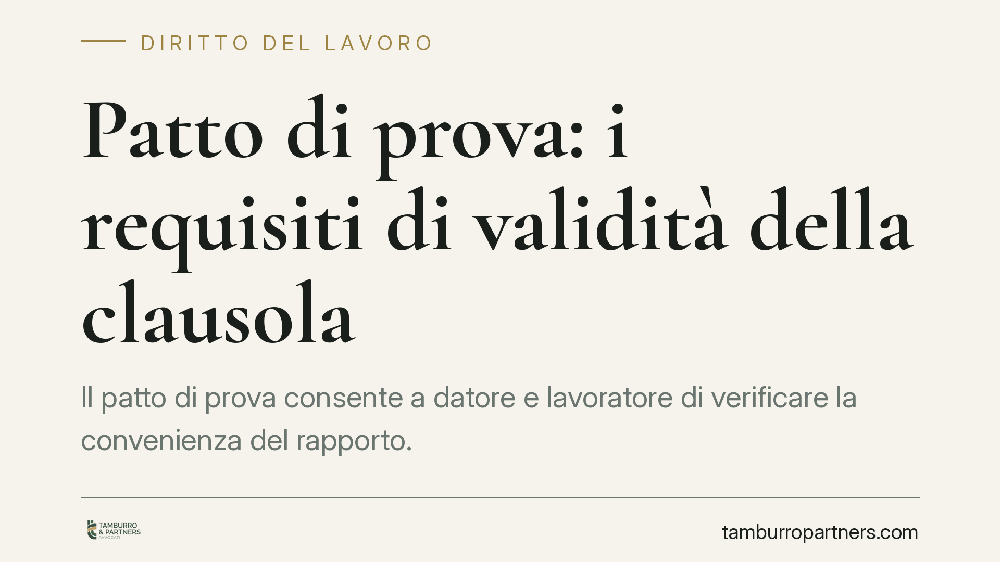

Patto di prova: i requisiti di validità della clausola
Il patto di prova consente a datore e lavoratore di verificare la convenienza del rapporto. Ma una clausola scritta male, firmata in ritardo o troppo generica è nulla: il rapporto diventa definitivo fin dall'inizio. Capire i requisiti di validità evita contenziosi costosi e assunzioni consolidate senza averne la consapevolezza.

Inquadramento normativo
Il patto di prova è disciplinato dall'art. 2096 del Codice civile. La norma stabilisce che l'assunzione del lavoratore può avvenire "in prova", consentendo a entrambe le parti di valutare la reciproca convenienza del rapporto durante un periodo iniziale.
Durante la prova ciascuna parte può recedere senza obbligo di preavviso né di motivazione. Proprio per questa deroga alle tutele ordinarie, la giurisprudenza richiede che la clausola rispetti requisiti formali e sostanziali rigorosi. La Corte di Cassazione ha chiarito in modo costante che il patto deve risultare da atto scritto, sottoscritto prima o contestualmente all'inizio dell'attività lavorativa, e deve indicare in modo specifico le mansioni oggetto della verifica.
I tre requisiti essenziali
Forma scritta. Il patto deve essere redatto per iscritto. La forma scritta è richiesta *ad substantiam*, cioè come condizione di esistenza della clausola: senza documento scritto il patto semplicemente non esiste.
Anteriorità della firma. La sottoscrizione deve avvenire prima dell'inizio della prestazione o, al più tardi, nello stesso momento. Un patto firmato a lavoro già iniziato è inefficace: la prova serve a verificare qualità ancora ignote, non a formalizzare a posteriori un rapporto già avviato.
Specificità delle mansioni. La clausola deve indicare con precisione le mansioni affidate. Un richiamo generico alla qualifica o al livello contrattuale non basta se da esso non si ricavano i compiti concreti. La ragione è logica: se non si definisce cosa il lavoratore deve dimostrare di saper fare, la prova perde senso.
Cosa accade se il patto è nullo
La conseguenza della nullità è netta e spesso sottovalutata dal datore di lavoro. Se il patto manca della forma scritta, è firmato in ritardo o indica mansioni generiche, la clausola di prova è nulla e si considera come non apposta.
Il rapporto di lavoro, in questo caso, si intende definitivo fin dall'origine. Significa che il datore non può più recedere liberamente: il licenziamento intimato "per mancato superamento della prova" diventa un licenziamento ordinario, soggetto a tutte le tutele previste contro i licenziamenti illegittimi, con rischio di reintegra o indennità risarcitoria a seconda del regime applicabile.
Per il lavoratore vale la posizione speculare: un recesso datoriale fondato su una prova nulla è un licenziamento impugnabile, con i relativi termini decadenziali da rispettare.
Implicazioni pratiche
Per il datore di lavoro il messaggio è chiaro: il patto di prova non è una formalità da sbrigare con moduli standard. Una clausola copiata senza adattarla alle mansioni reali è carta straccia e può trasformare un'assunzione in prova in un rapporto stabile indesiderato.
Per il lavoratore la conoscenza di questi requisiti è altrettanto rilevante. Verificare la validità del patto permette di comprendere la propria effettiva posizione e, in caso di recesso, di valutare se vi siano margini di impugnazione.
Un punto spesso trascurato riguarda la durata: deve rispettare i limiti fissati dal contratto collettivo applicabile. Una durata eccessiva o non prevista espone la clausola a contestazioni ulteriori.
Cosa fare in concreto
- Redigete il patto per iscritto in un documento sottoscritto da entrambe le parti, distinto o integrato nella lettera di assunzione.
- Fate firmare prima dell'inizio dell'attività: datate la sottoscrizione e conservate prova della data.
- Descrivete le mansioni in modo specifico, indicando i compiti concreti e non il solo livello contrattuale.
- Verificate la durata consentita dal contratto collettivo di riferimento e non superatela.
- In caso di recesso per mancato superamento, controllate la validità del patto prima di procedere o, se siete lavoratori, prima di decidere se impugnare.
La cura nella redazione iniziale costa poco; rimediare a un patto nullo costa molto di più.
Disclaimer
Contributo informativo a cura di Tamburro & Partners - Avv. Giuseppe Tamburro. Non costituisce parere legale.
Ogni storia di lavoro ha i suoi tempi.
Se gestisci HR e vuoi un confronto su contenzioso, ispezioni o licenziamenti, scrivi allo studio. Ti rispondiamo entro un giorno lavorativo.